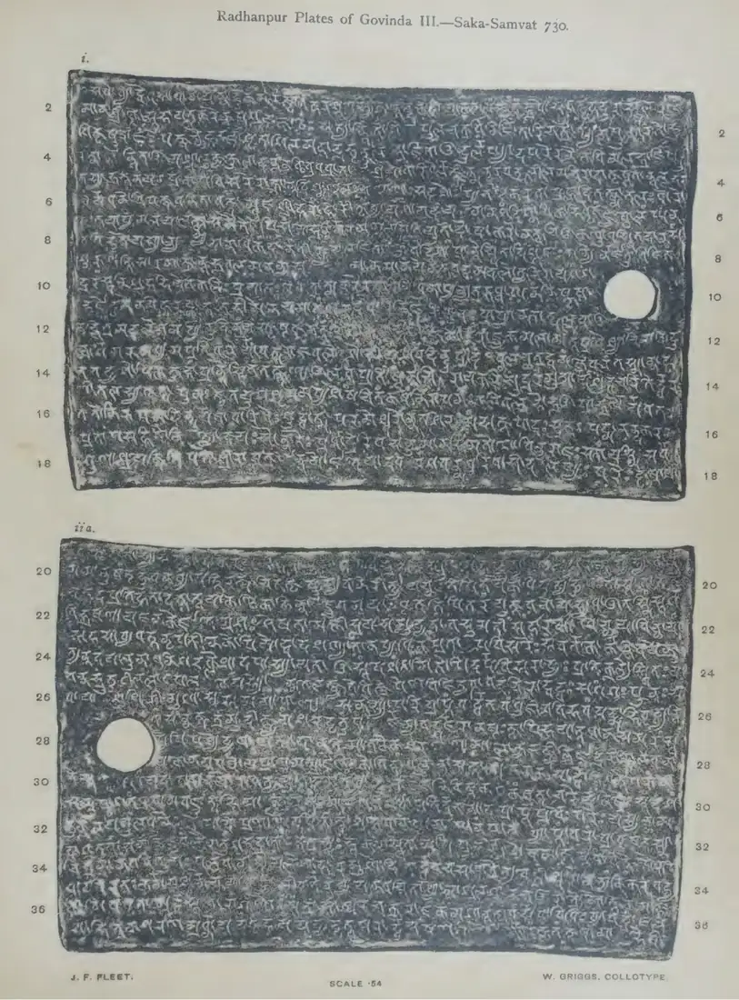
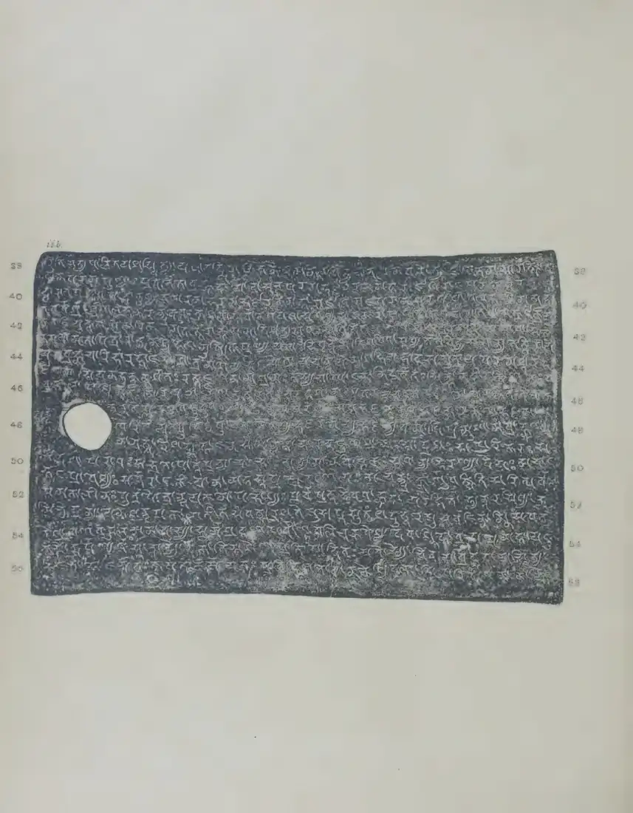

Radhanpur Plates of Govinda III. ; Saka-samvat 730
RADHANPUR PLATES OF GOVINDA III. ;
SAKA-SAMVAT 730.
This inscription has already been edited, with a translation and a photo-lithograph, in the Indian Antiquary, Vol. VI. p. 59 ff., by the late Professor Bühler, to whom the original plates were lent by the authorities of Râdhanpur, a Native State under the supervision of the Political Superintendent of Pâlanpur, in the Bombay Presidency. As it is considered desirable to issue a true facsimile of this record, I now re-edit it from ink-impressions placed at my disposal by Dr. Fleet, who obtained the original plates on loan from the Political Superintendent of Pâlanpur in 1884. There is no information as to whom the plates may actually belong to.
The inscription is on two copper-plates the first of which is engraved on one side only. It is incomplete ; the third plate that would have completed it is lost ; and so are the ring and seal which probably accompanied the plates. Either plate measures about 11 by 7 . Their edges were fashioned thicker than the inscribed surfaces, so as to serve as rims to protect the writing ; but the surfaces are a good deal corroded by rust—a fact which was altogether obscured by the manipulated photo-lithograph issued with Professor Bühler's paper in 1877—and some letters, in
consequence, are more or less illegible. The weight of the two plates is 4 lbs. oz. The letters shew through faintly on the back of the first plate; they bear the usual marks of the working of the engraver's tool, throughout. Their size is between about and .—The characters belong to the northern class of alphabets. For some of the forms of individual letters attention may perhaps be drawn to the initial â in â-chandr-, l. 51; to ñ in Vêng-îsvaró, l. 34; ja, e.g. in Krishṇarājah, l. 3; jú in játu, l. 8; ñ in kin=n=ájñ=éva, l. 21, and pañcha°, l. 54; tó in bhaṭóddhaténa, l. 11; qa in niguḍa, l. 24; dha in upagúdha, l. 2; the subscript n in Krishṇa°, l. 3, and karnṇá°, l. 7; pha in phalaké, l. 25; and to the final t, e.g. in bhrájitát, l. 3. The very rare letter jh, which occurs in nirjjhara, l. 11, and probably in duvéjha, l. 47, unfortunately in either case is not very distinct.—The language is Sanskrit, but some proper names from the southern vernaculars occur in the formal part of the grant, in lines 44-48. In respect of orthography the following points may be mentioned. The sign for v denotes both v and b; j is used for y in játé, l. 22; chchha for tsa in ádhichchhayá, l. 22; and the vowel ri is seven times employed for ri, e.g. in -bhay-áśrita, l. 3, and -śríyam-, l. 15. An original final n before a following consonant is generally (altogether 14 times) wrongly changed to anusvára, e.g. in sañ (for san), l. 7, sprishṭavám, l. 12, and tasmiñ, l. 21. Visarga is everywhere (permissibly) omitted before following sth, sp and sph, e.g. in urasthala-, l. 1, ya sprishṭavám, l. 12, and °bhúshitá sphuṭam-, l. 19. The rules of sañdhi have been frequently neglected, and occasionally an akshara has been omitted by the writer.
The inscription records a grant by the Ráshṭrakúṭa king Gövindarája [III.], or, as he is called in lines 39-41, the Paramabhaṭtáraka Mahárájádhirája Paramésvara and Prithvívallabha, the glorious Prabhútavarsha, the glorious Śrívallabhanaréndradéva, who meditated on the feet of the Paramabhaṭtáraka Mahárájádhirája Paramésvara, the glorious Dhárávarshadéva. After the word óm, and the well-known verse Sa vó=vyád=Védhasá dháma, it has nineteen verses glorifying the kings Krishṇarája [I.], his son Dhóra (Dhruva) Nirupama Kalivallabha, and his son Gövindarája [III.], the donor of the grant. With the exception of verses 7, 15 and 19, the first half of verse 12, and part of verse 13 of the present inscription, the same verses also occur in the Waṇi grant, edited by Dr. Fleet in Ind. Ant. Vol. XI. p. 157 ff.; and all the nineteen verses are found—generally in a very corrupt form, yet with one or two more correct readings—in the Maṇne grant mentioned in Ep. Carn. Vol. IV. Introduction, p. 5, of which a photograph, received from Mr. Rice, has been lent to me by Dr. Fleet. Verse 9 also occurs in the Śirúr inscription, Ind. Ant. Vol. XII. p. 218, lines 2 and 3 of the text. An examination of the language and general style of most of these verses can leave no doubt that their author or authors1 for their expressions and poetical devices are greatly indebted to such works as Subandhu's Vásavadattá and Bâṇa's Kádambari and Harshacharita; and to shew this, I have quoted in the notes on my translation some of the parallel passages which I have collected from those literary works. Regarding the facts recorded in the verses and their historical bearing, I could not add anything of value to what other scholars already have stated; but, concerned as I am with the proper interpretation of the text, I must submit here at least one short remark on the first words of verse 5, which I have found great difficulty in translating and may not perhaps have translated very satisfactorily. The words jyéshṭh-óllañghana of that verse I have rendered, with reference to Dhóra, by 'the passing over of his eldest brother,' because, in regard to the moon with which Dhóra is compared, I had to translate the same words subsequently by 'after having passed Jyéshṭhá.' But I would not wish the reader to understand from my translation that the author must necessarily be taken to say that Dhóra immediately succeeded his father, to the exclusion of his eldest brother from the succession. The words of the original text may equally well mean that Dhóra superseded his eldest brother after the latter had succeeded their father, or that he secured the throne for himself by revolting against that brother. The verb ul-lañgh and
1 In the verses 13 and 19 of the present inscription, their author—if my readings be correct—has employed a construction and a form for which analogies may be found in epic poetry, but which are contrary to the rules of classical Sanskrit; see my notes on the text.
ullañghana are generally equivalent to ati-kram and atikrama—in fact, I believe our author to have used jyéshthôllañghana in actual imitation of the expression jyéshthátikrama which occurs in the passage from the Kádambarî quoted in my notes—and may well convey the various meanings of the latter.1 Nor would the circumstance that Dhòra's action is compared with a certain proceeding of the moon be at all calculated to enlighten us on what the author meant exactly to express by the word ullañghana, because, in accordance with the very nature of the figure of slêsha, that word might denote one thing with regard to the moon, and something quite different in the case of Dhòra. The question, therefore, whether Dhòra immediately succeeded his father, or superseded his eldest brother after the latter had ascended the throne, cannot in my opinion be answered from a consideration of the words under discussion.
The prašastî which is spoken of in the above, and of which a full translation will be given below, is followed in line 38 of the plates by another, very common verse :—
(V. 21.) “Having seen that this life, unstable like wind and lightning, is void of substance, he (Gôvindarâja) has devised this gift to a Brâhmañ, most meritorious on account of a donation of land.”
And in the prose passage which follows this verse, the king, here called Prabhûtavarsha (l. 40) and described as already stated above, in the usual terms issues an order to the Râshtrapatis and other officials, to the effect that, while in residence at Mayûrakhandî (l. 42), on the occasion of a solar eclipse on a date to be given below, he granted the village of Rattajjuña (or Rattajuña, ll. 45 and 49), situated in the Rásiyana bhukti, to Paramêsvarabhatta—a son of Chandiyamma-Gahiyasâhasa,2 and son's son of Nâgaiyyabhatta who dwelt at Tigavi (l. 43), was a member of the community of Trivédins (or students of the three Vèdas) of that place, and a student of the Taittirîya Vèda, and belonged to the Bhâradvâja gôtra—for the purpose of keeping up the so-called five great sacrifices.
The boundaries of the village of Rattajjuña (or Rattajuña) were (l. 45) : on the east, the river Sinhâ ; on the south, Vavulâlâ ; on the west, Miriyathâna ; and on the north, Varaha-grâma, 'the village of Varaha.' And regarding the village it is further stated that it was (the village) of certain Brâhmañs—the chief of whom were Anantavishnubhatta, Vitthu-duvê[jha?],3 Gôindamma-shađañgavid, Savvaibhatta, Chandadibhatta, Kunṭhanâgaibhatta, Mâdhavairiyappu, Vitthapu, Dèvañaiyyabhatta, Rêyaiyyabhatta, etc.—associated with the forty Mahájanas.4 This latter remark I can only understand to mean that the people mentioned were settled at the village.
1 From my first note on the translation of verse 5 it will be seen that the commentator of the Nirukta uses ati-kram with reference to the action of a younger brother who had himself crowned to the entire exclusion of his eldest brother from the succession. But atikrama in jyéshth-átikrama quoted ibid. from the Kádambarî is understood by the commentator merely to mean 'the transgression of the commands' (nirdés-ôllañghana) of an eldest brother. Similarly, atikrama is explained by ájñ-átikrama in the commentary on Yâjñavalkya, II. 232 ; and in Manu, III. 63, brâhmañ-átikrama is translated by 'violence to Brahmans' and 'irreverence to Brâhmañs,' while the different commentators on Manu paraphrase atikrama here by adhikshèp-ádi, tiraskár-ádi, and apûjana.
2 Gahiyasáhasa apparently is equivalent to ghaisása which we have in the names Prabhákara-ghaisása and Vásiyaña-ghaisása, above, Vol. III. p. 216, l. 11 of the text, and in other names, e.g. in Ind. Ant. Vol. VII. p. 305, and Vol. XIV. pp. 71 and 72. Ghaisása is a family name now found among Chitpâvan Brâhmañs ; see Dr. Bhandarkar's Early History of the Dekkan, p. 124.
3 The word affixed to the next name, shađañgavid, 'knowing the six Vèdângas,' shews that the word affixed to the name Vitthu most probably is some equivalent of the Sanskrit dvivéda or dvivédin, 'a student of two Vèdas ;' but I know no rule by which either could become duvéjha. In the Wañî grant, Ind. Ant. Vol. XI. p. 159, l. 35, we have duvédi- for dvivédi-, and elsewhere (ibid. Vol. XIV. p. 71, ll. 1 and 2) occur dvédi and duvé. The last might suggest Vitthu-duvé, but I do not see my way to connect the akshara jha (if it is really correct) with the following proper name which, standing for Gôyindamma, Gôvindamma (Gôvindappa), seems unobjectionable.
4 Above, Vol. V. p. 10, note 2, Dr. Fleet has stated that the Mahájanas of a village were the collective body of the Brâhmañs of the village. I cannot reconcile this statement with the circumstance that the present inscription speaks of the Brâhmañs of the village as associated with (or accompanied by) the forty Mahájanas.
Of the localities mentioned in the preceding, Rásiyana, from which the bhukti was named in which the village granted was situated, has been already identified by Prof. Bühler with the modern Rásin, a town in the Ahmadnagar Collectorate of the Bombay Presidency,1 the 'Raseen' of the Indian Atlas, sheet No. 39, in lat. 18° 26', and long. 74° 59'. The village granted, Rattajjuṇa or Rattajuṇa, is identified in the Gazetteer of the Bombay Pres. Vol. XVII. p. 352, with the village of 'Rátájan,' the 'Rátanjan' of the Postal Directory, and 'Ratunjun' of the Indian Atlas, sheet No. 39, about 24 miles north-north-east of 'Raseen.' It lies on the western bank of the river Sinâ ('Seena') which is the Sinhâ river of the grant. Three miles almost exactly south of it is 'Baboolgaon,' the Vavulâlâ of the grant; and a little more than two miles west of 'Ratunjun' we find 'Meerujgaon,' which must be Miriyaṭhâṇa. Lastly, the name of Varaha-grâma which was north of Rattajjuṇa survives in the names 'Wurgaon' and 'Wurgaon-kota-che,' which are found in the Indian Atlas, sheet No. 39, eight and five miles respectively north by west of 'Ratunjun.'— Tigavi, the place of residence of the grantee's grand-father and most probably his own, is suggested by Dr. Fleet to be 'Tugaon,' a village about eight miles north-east by north of Saṅgamnêr, the 'Sungumner' of the Indian Atlas, sheet No. 38; it would be distant about 80 miles north-west by north from 'Ratunjun.'— On Mayûrakhandi whence the grant was issued, see Dr. Fleet's Dynasties, p. 396.
As has been already stated, the grant was made on the occasion of a solar eclipse; and the date on which this eclipse took place is given (ll. 53 and 54) as the new-moon tithi of the dark half of Śrâvaṇa in the (Jovian) year Sarvajit and the Śaka year 730 (given in words only). I have already had occasion to shew—see Ind. Ant. Vol. XXIII. p. 131, No. 108, and compare Vol. XXV. pp. 267, 269 and 292—that this date for Śaka-Sainvat 730 expired corresponds to the 27th July A.D. 808, when there was a total eclipse of the sun, visible in India. At Râsin the greatest phase of this eclipse was about 5 digits, and the moment of the greatest phase was shortly after true sunrise. The year Sarvajit can be connected with the date only by the so-called northern system, because by the strict mean-sign system Sarvajit had ended on the 26th May A.D. 808, and by the southern system Sarvajit corresponds to Śaka-Sainvat 730 current.
The second plate ends with the usual admonition not to obstruct the grantee in the enjoyment of this grant, and the missing third plate may be assumed to have contained some similar remarks and a number of benedictive and imprecatory verses.
I consider it unnecessary to publish a full translation of the prose part of this inscription; as regards my translation of the introductory verses, I can only say:— Yatnê kritê yadi na sidhyati kô 'tra dôshah?
TEXT.2
First Plate.
Ôîn3 [||*] Sa4 - vô=vyâd=Vêdhasâ dhâma yan-nâbhi-kamalam kṛritam [|*]
Hzras=cha yasya kânt-êndu-kalayâ kam=alamkṛritam [|| 1*] 5Bhûpô=bhavad=
vṛi(bṛi)had-urasthala-râja-
2 mâna-śrî-kaustubh-âyata-karair=upagûdha-kaṇṭhaḥ6 [|*] satyânvitô vipula-chakra-
vinirjit-ârichakrô=py=akṛishṇacharitô bhu-
1 See the Gazetteer of the Bombay Pres. Vol. XVII. p. 734.
2 From an impression supplied by Dr. Fleet.
3 Denoted by a symbol.
4 Metre: Ślôka (Anushṭubh).
5 Metre: Vasantatilakâ.
6 Originally the sign of anusvâra was engraved above ka, but it has been struck out again.
3 vi Kṛishnarājaḥ [|| 2*] 1 Pakshachchhēda-bhay-âśṛi(śri)t-âkhila-mahâbhûbhṛitkula-bhrâjitât2 durlaṅghyâd=aparair=anêka-vimala-bhrâjishṇu-
4 ratn-ânvitât [|*] yaś=Châlukya-kulâd=anûna-vivu(bu)dha-vrât-âśrayô vâridhêr=
Lakshmîn(m)=Mandaravat=sa-lîlam=achirâd=âkrishṭavânn=3Vallabhaḥ [|| 3*]
5 Tasy=âbhût=tanayaḥ pratâpa-visarair=âkrânta-digmaṇḍalaḥ4 chaṅṇḍâmśôḥ sadriśô=py=
achaṇḍakaratâ-prahlâdita-kshmâtalaḥ [|*] Dhôrô
6 dhairya-dhanô vipaksha-vanitâ-vaktrâmvu(mbu)ja-śrî-harô hârîkritya yaś[ô] yadîyam=
aniṣam dig-nâyikâbhir=dhṛitaṅ [|| 4*] Jyêshṭh-ô[|*]laṅghana-
7 jâtay=âpy=amalayâ lakshmyâ samêtô=pi sam5 yô=bhûn=nirmala-maṇḍala sthiti-yutô
dôshâkarô na kvachit [|*] karṇṇ-âdhasthita-dâna-saṅ-
8 tati-bhṛitô yasy=ânya-dân-âdhikaṅ dânaṅ vîkshya su-la[j*]jitâ iva diśâṅ prântê
sthitâ diggajâḥ [|| 5*] 6Anyair=na jâtu vijitaṅ
9 guru-śaktisâram=âkrânta-bhûtalam=ananyasamâna-mânaṅ [|*] yên=êha va(ba)ddham=
avalôkya chirâya Gaṅga[m*]
10 dâraṅ sva-nigraha-bhiy=êva Kaliḥ prayâtaḥ [|| 6*] 7Êkatr=âtma-va(ba)lêna8
vâ[r]jinidhin=âpy=anyatra rudhvâ9 ghanaṅ nishkṛishṭâ[si*]-10
11 bhat-ôddhatêna viharadgrâh-âtibhîmêna cha [|*] mâtaṅgân=madavâri-nirjjhara-
muchaḥ prâpy=ânatât=Pallavât
12 tach=chitraṅ mada-lêṣam=apy=anudinaṅ ya sprishṭavân11 na kvachit [|| 7*]
[Hêlâ]-svî[kṛi]ta-Gauḍa-râjya-kamalâ-mattaṅ pravêsy=âchirât12 du-
13 rmârgaṅ maru-madhyam=aprativa(ba)lair=yô Vatsarâjaṅ va(ba)lai[ḥ] [|*]
Gauḍiyaṅ śaradindu-pâda-dhavalaṅ 13chchhatra-dvayaṅ kêvala[m] tasmân=n=âhri-
14 ta tad-yaśô=pi kakubhâṅ prântê sthitaṅ tatkshaṇât [|| 8*] 14Lavdha(bdha)-
pratishṭham=16achirâya Kaliṅ sudûram=utsârya śuddha-charitair=ddhara-
15 ṇî-talasya [|*] kṛitvâ punaḥ Kṛitayuga-śṛi(śri)yam=apy=aśêshaṅ chitraṅ kathaṅ
Nirupamaḥ Kali-vallabhô=bhût [|| 9*] 16Prâbhûr=dhairyavataḥ
16 tatô Nirupamâd=indur=yathâ vâridhêḥ śuddh-âtmâ paramêsvar-ônnata-śiraḥ-sainsakta-
pâdaḥ sutaḥ [|*] padm-ânandakaraḥ
17 pratâpa-sahitô nîty-ôdayaḥ sônnatêḥ pûrv-âdrêr=iva bhânumân=abhimatô
Gôvindarâjaḥ satâṅ [|| 10*] Yasmi[m]17 sarva-
18 guṇ-âśrayê kshitipatau śri-Râshṭ[r]akûṭ-ânvayô jâtê Yâdavavamśavan=Madhuri[pâ*]v=
âsîd=alaṅghyaḥ paraiḥ [|*] dṛishṭ-âsâ-
Second Plate ; First Side.
19 vadhayaḥ kṛitâsyasēdriśâ18 dânêna yên=[ô]ddhatâ muktâhâravibhû[shitâ]19
sphuṭam=iti pratyarthi[nô=p]y=arthin[ô]=py=asy=âkâra-20
1 Metre of verses 3-5: Śârdûlavikrîḍita.
2 Read -bhrâjitâd=.
3 Read °shtavân=.
4 Read °laś=chaṇḍâmśôḥ.
5 Read san=.
6 Metre: Vasantatilakâ.
7 Metre of verses 7 and 8: Śârdûlavikrîḍita.
9 Read ruddhvâ.
8 This reading is quite certain; Prof. Bühler read •vahêna.
10 Nishkṛishṭâsi- is the reading of the Maṇṇe grant. Prof. Bühler's text has nishkṛishṭâri-, and the photo-lithograph actually has the akshura ri at the end of line 10; but, so far as I can judge, that akshura was never really engraved, and owes its presence solely to Prof. Bühler's conjectural reading.
11 Read sprishṭavân=na. Prof. Bühler has suggested the reading yat=sprishṭa°, but this alteration of the original text seems to me unnecessary.
12 Read =chchirdâ=.
13 Read chhattra-.
14 Metre: Vasantatilakâ.
15 Originally the sign of anusvâra was engraved above shṭha, but it has been struck out again.
16 Metre of verses 10-20: Śârdûlavikrîḍita.— Read prâbhûd=dhairyavatas=.
17 Read yasmin=.
18 Read kṛitâḥ susadriśâ.
I should have expected °bhúshaṇḍ; but the plate seems really to have °bhúshitâ, which is the reading of the Wanî and Maṇṇe grants.
Read =arthinâm [|| 11*] Yasy=âkâra-.
20 m=amânusham tri(tri)bhuvana-vyâpatti-raksh-ôchitam Krishnasy=êva nirîkshya
yachchhati pitary=aikâdhipatyam bhuvah [|*] âstâm tâta ta-
21 v=aitad=apratihatâ dattâ tvayâ kanțhikâ kin=n=âjñ=êva mayâ dhřit=êti pitaram
yuktam vachô yô=bhyadhât [|| 12*] Tasmim1 svarga-
22 vibhûshanâya janakê jâ(yâ)tê yašahséshatâm=êkibhûya samudyatâm2 vasumatî-
samhâram=âdhichchhayâ3 [|*] vichchhâyâm4
23 sahasâ vyadhatta nripatîn=êkô=pi yô dvâdaśa khyâtân=apy=adhika-pratâpa-
visaraih samvartakô=rkân=iva [|| 13*] Yên=â-
24 tyanta-dayâlun=âtha nigađa-klésâd=apâsy=âyatât svam déśam gamitô=pi darpa-
visarâd=yah prâtikûlyê sthitah [|*] yâ-
25 van=na bhrutu(ku)tî lalâta-phalakê yasy=ônnatê lakshyatê vikshépêna vijitya
tâvad=achirâd=va(ba)ddhah sa Gaṅgah punah [|| 14*] Sam-
26 dhây=âsu sílîmukhâm5 sva-samayâm6 vâ(bâ)nâsanasy=ôpari prâptam varddhita-
vam(bam)dhujïva-vibhavam padm-âbhivrïddhy-anvi-
27 tam [|*] sannakshatram=udîkshya yam śarad-řitum parjanyavad=Gûrjarô nashṭah
kv=âpi bhayât=tathâ na samaram sva-
28 pnê=pi paśyêd=yathâ [|| 15*] Yat-pâdânatimâtrak-aika-śaranâm=âlôkya lakshmî[m*]
nijâm dûrân=Mâlava-nâ-
29 yakô naya-parô yam prâṇamat=prâṅjalih [|*] kô vidvâm7 valinâ sah=
âlpa-va(ba)laka sparddhâm vidhattê param8 nî-
30 tês=tad=dhi phalam yad=âtma-parayôr=âdhikya-samvêdanam [|| 16*] Vimdhy-
âdrêh kaṭakê nivishṭa-kaṭakam śrutvâ charair=yam nijaih svam déśam
31 samupâgatam dhruvam=iva jñâtv[â] bhiyâ prêritah [|*] Mâr[âśa]rva-
mahîpatîr=drutam=[ag*]âd=aprâptapûrvaih paraih9 yasy=êchchâm=a-
32 nukûlayam10 kula-dhanaih pâdau pranâmair=api [|| 17*] Nîtvâ Śribhavanê
ghanâghana-ghana-vyâpt-âmva(ba)râm prâvřisham- tasmâ-
33 d=âgatavâm11 samam nija-va(ba)lair=â-Tuṅgabhadrâ-taṭam [|*] tatra-sthah
svakara-sthitâm=api punar=na(ni)hśésham=âkrishṭavâm12 vikshépair=api
34 chitram=ânata-ripur=yah Pallavânâm śri(śri)yam [|| 18*] Lêkhâhâra-mukhôdit-
ârddha-vachasâ yatr=aitya Vêng-ísvarô nityam kimkaravad=vya-
1 Read tasmin=.
2 Read samudyatân=. From the St. Petersburg Dictionary it will be seen that udyata, abhyudyata, praty-udyata, samudyata, etc., occur in various epic and purânic texts where we should have expected udgata, etc. The case is the same with the word samudyatân in the present passage. Here the fact that the twelve princes are compared with twelve suns shews beyond a doubt— see the passages which will be quoted in connection with the translation of the verse— that we want a word which means “risen,” and this could only be samudgatân. I prefer this explanation to the assumption that samudyatâm might have been erroneously put by the writer for samudyatô (from sam-ud-i).
3 Originally vasumatîm was engraved, but the sign of anusvâra clearly is struck out. In the two aksharas mâdhi the â of mâ also looks as if it had been struck out, and dhî may perhaps have been altered, but I do not see what alteration could be resorted to. As the Maṇne grant actually has vasumatî-samhâram=âdhitsayâ— the Wanî grant, omitting part of the verse, has vasumatî n=êkô=pi yô dvâdaśa— I adopt the same reading also for the present grant; but it should be stated that the construction of a noun substantive like âdhitsâ (derived from the Desiderative) with the accusative case, though not unknown in epic poetry, is contrary to the strict rules of classical Sauskrit. Prof. Speijer in his Sanskrit Syntax quotes e.g. Mahâbhârata, I. 113, 21, jigtshayâ mahîm, ‘with the desire of conquering the earth.’
4 Read viohchhâyân=.
5 Read °mukhân=.
6 Read °mayân=.
7 Read vidrân=balind.
8 Originally parâm was engraved, but the vowel â of the second syllable appears certainly to have been struck out.
9 Read parair=.
10 Read °kûlayan=.
11 Read °tavân=.
12 Read °shṭavân=.
Plate 1 is bound after this page.
Plate 2 is bound after this page.
35 dhád=avirataĵ karma svaśarm-ĉechhayâ [|*] vâhyâlí-vṛitir=asya yêna
rachitâ vyôm-âgra-lagn=â[ra]chat1 râtrau mauktika-2mâli-
36 kâm=iva vṛitâ3 mûrddhastha-târâ-gaṇaiĵ [|| 19*] Saṅtrâsât=para-chakra-râjakam=
agât=tatpûrva-sêvâvidhĵ4 vyâvaddh-âmĵali-
37 śôbhitêka(na) śaraṇam mûrdhnâ yad-ainhṛi(hri)-dvayam [|*] yad-yad-datta-
parârddhya-bhúshaṇa-gaṇair=5n=âlamkrṛitam [ta*]t=tathâ mâ bhaishí-
Second Plate ; Second Side.
38 r=iti satya-pâlita-yaśasthityâ yathâ tad-girât6 [|| 20*] 7Tên=êdam=anila-
vidyu[ch*]-charinchalam=avalôkya jĵvitam=asâram[|*] kshiti-
39 dâna-paramapuṇyaĵ pravartitô vra(bra)hma-dâyô=yam[|| 21*] Sa cha
paramabhatṭâraka-mahârâjâdhirâja-paramêsvara-śrima-
40 d-Dhârâvarshadêva-pâdânudhyâta-paramabharamabhatṭâraka-8mahârâjâdhirâja- pa r a m ê -
śvara-pṛithyvîvala(lla)bha-śrimat-Prabhû-
41 tavarsha-śrí-Śrîvallabhanarêndradêvaĵ kuśalí sarvân=êva yathâ-samvadhyamânakâm9
râshṭrapati-vishayapati-grâmakûtâkûyu-10
42 ktaka-niyuktak-âdhikârika-mahattar-âdîm11 samâdiśaty=astu vaĵ saṅviditam yathâ
śrí-Mayûrakhaṇḍi-samâvâsitê-
43 na mayâ mâtâpitrôr=âtmanas=ch=aihik-âmushmika-puṇya-yaśô-bhivṛiddhayê |12
Tigavivâstavya-13ta[t*]traividyasâmânya-Tê(tai)ttirîya-
44 14yasavra(bra)hmacâ hri- B hâ ra d v â j as a g ô tra - N â g a i y y a b h a t ṭ a - p a u t r â y a
15Chandiyamagahiyasâhasa-putrâya Paramêsvarabha-
45 ṭṭâya Râsiyanabhukty-antargataĵ16 Rattajjuṇa-nâma-grâmaĵ tasya ch=âghâṭanâni
pûrvataĵ Sinhâ nadî dakshiṇataĵ Va-
1 Read = ârachad=. Instead of rachat, Prof. Bühler's text has na chêt, and in the photo-lithograph the first akshara of the group is figured as na. But in the original plate that akshara is very different from what it has been represented to be in the photo-lithograph in the Ind. Ant., and certainly is not na. It looks like a ru, the u of which, as is shewn by the back of the paper impression, may have been struck out; the Manne grant also, after-lagnâ, has rucham. The consonant of the second akshara of the group is ch, with a mark above it which Prof. Bühler has taken to be the sign for ê; but that mark is so far away from the ch, and differs so much from the sign for ê generally here used, that I regard it as an accidental scratch. At any rate, I am convinced that, if ê was really engraved, it has been struck out. The actual reading therefore is -lagnâruchat or -lagnârachat, and I adopt the latter because in ârachat we obtain a verb that may govern the following accusative case mauktika-mâlikâm which otherwise, like Triśaṅku, would stand in the air — derived from the root rach which is frequently found in construction with mâld, 'a garland.' Compare e.g. Harshach. p. 167, rachita-muṇdamdlaka; Kâd. p. 139, oâshpajalavindubhir=ârachitâm sphatikâkshamâlikâm; and Daśakumârach, Prof. Bühler's 2nd ed., p. 45, ârachita-muṇjamâla, 'one who has assumed a beautiful garland.' The difficulty which remains is, that in classical Sanskrit rach is a root of the 10th class — compare e.g. Harshach. p. 158, lavaṅgamâldâ rachayantibhiĵ — and that our author, in writing ârachat, would have used a form for which an analogy could be found only in epic poetry. For this compare the construction of âdhitsâ, above, p. 244, note 3.
2 Originally mauktikê- was engraved, but the superscript ê has been struck out.
3 Prof. Bühler gives dhṛitâ, which would be a possible reading.
4 Read 'nidhi-vyâbaddh-.
5 Between nai and rnd another akshara may have been originally engraved.
6 Read tad-girâ. 7 Metre: Âryâ. 8 Read -paramabhatṭâraka-.
9 Read -saṅbadhyamânakân-. 10 Read -grâmakût-âyu-. 11 Read -âdîn=samâdiéati | Astu.
12 This mark should be struck out, and may have been struck out already in the original.
13 Prof. Bühler read the name of the village Tigamvi, but in the impression I fail to recognise any sign of anusvâra over the word.
14 The akshara ya has been wrongly repeated here and should be struck out.
15 Originally the sign of anusvâra seems to have been engraved over the first ya of this word. Prof. Bühler read the name Chandriyammao.
16 Here and in other places below the rules of ṣaṅdhi have not been observed.
46 vulâlâ paśchimatah MIriyaṭhâṇa uttaratah Varaha-grâmah1 êvam=ayam2
chaturâghâṭan-ôpalakshitah tathâ A-
47 3nantavipṇu(shṇu)bhatta-Viṭthuduvê[jha]- 4Gôinda [m]mashada amga [v]i [t?6]-
Savvaibhatta-Chandadibhatta-Kuṇṭhanâgaibhatta-Mâdha-
48 vairiyappu-Viṭthapu-Dêvaṇaiyyabhatta-Rêyaiyyabhatt-êty-êvamâdi-pramukhâ nâm ( nâm )
vrâ(brâ)hmaṇâ-
49 nâm chatvârimśad-mahâjana-samanvitânâm Rattajuṇa-grâmah sa-ôdraṅgah sa-
parikarah sa-
50 dasâparâdhah sa-bhûtôpâttapratyâyah sa-ôtpadyamânavishṭikah sa-dhânyahiraṇyâdêyah
a-châta-
51 bhata-prâvêsyah sarva-râjakîyânâm=a-hastaprakshêpaṇîyah â-chandr-ârkk-ârṇṇava-
kshiti-sarit-parvata-
52 samakâlînah putra-pautr-ânvaya-kram-ôpabhôgyah6 pûrvapratta-dêvavrâ(bra)hmadâya-
rahitô=bhyantarasi [d*]dhyâ bhû-
53 michchhidra-nyâyêna Śa[ka*]nripakâl-âtita-sainvatsara-satêshu saptasu
trim(trim)śad-uttarêshu Sarvajin-nâmni sainvat[sa]-
54 rê Śrâvaṇa-vahula7 amâvâsyâm sûryagrahaṇa-parvaṇi va(ba)li-charu-
vaisya(śva)dêv-âgnihôtra-pañchamahâyajña-8
55 kṛi(kri)y-ôtsarpaṇârtham snâtv=âdy=ôdak-âtisargêṇa pratipâditah [|*] Yatô=sy=ôchitayâ
vra(bra)hmadâya-sthityâ
56 bhuṅjatô bhôjayatah kṛishatô karshayatah pratidiśatô vâ na kaischid=alp=âpi
paripamthanâ kâryâ
TRANSLATION OF VERSES 1-20.
Ôm. (Verse 1.) May He9 protect you the lotus of whose navel was made by Brahmâ into his own abode, and Hara10 too, whose head is adorned by the lovely crescent of the moon!
(V. 2.) There was on the earth a king Kṛishṇarâja, whose neck was clasped by the outstretched hands of Fortune11 shining on his broad chest, who was gifted with truth,12 and who by his large armies defeated the armies of opponents—[and who thereby was like the god Kṛishṇa] whose neck is hidden by the long rays of the Kaustubha gem glittering on his broad chest, who is united with Satyâ, and who with his broad disc defeats hosts of enemies—yet whose deeds were not like Kṛishṇa's13 [i.e. whose deeds were not black (kṛishṇa)].
1 Prof. Bühler read the name Vađaha, but the second akshara undoubtedly is ra.
2 Prof. Bühler read êvam=êva.
3 In the names in this line and the next Prof. Bühler read 14 aksharas differently.
4 I am not absolutely certain that the akshara in braekets is really jha in the original, but it certainly looks more like jha than anything else. See above, p. 241, note 3.
5 Very probably this final t was engraved above the line, between vi and sa, where the impression and the accompanying collotype shew a kind of blot which has been carefully effaced in the photo-lithograph accompanying Prof. Bühler's paper.
6 Originally -kramômpabhôgyah was engraved, 7 Read -bahul-âmâvâsyâm.
8 Before this word one would have expected to read, as in the Waṇî grant, -âgnihôtr-âlithi.
9 I.e. Vishṇu.
10 I.e. Śiva.
11 Referred to the king, bri-kaustubha would literally mean 'Fortune (as bright as) the Kaustubha gem,' and referred to the god Kṛishṇa it might mean either 'the glorious Kaustubha gem' or 'Lakshmî and the Kaustubha gem.' Similar compounds are most common; and so is the idea that Fortune rests on a king's breast.
12 Satyânvita = satya + anvita and Satyâ + anvita, and Satyâ is a shorter form of the name Satyabhâmâ, denoting one of Kṛishṇa's wives. Compare Vâs. p. 122, Kṛishṇa iva satyabhâmôpêtah, 'he was endowed with truth (satya), spendour (bhâ), and fortune (mâ), and therefore like Kṛishṇa who is united with Satyabhâmâ.'
13 Only for those who are not familiar with the devices of Indian poets, I would state that these words are by no means intended either to convey any censure of the god Kṛishṇa, or to draw a distinction between that god and the king. The poet merely employs the figure of speech termed virôdha (or virôdhdâbhâsa). In saying that
(V. 3.) Aided by1 the total number of his wise men, He easily and swiftly drew to himself, Vallabha as he was,2 Fortune from the Châlukya family, which was illustrious because all the families of great monarchs resorted to it from fear of being shorn of their partisans, was difficult to be thwarted by others, and possessed of many stainless brilliant treasures3— just as the Mandara mountain,4 supported by the whole assemblage of the gods, easily and swiftly drew Lakshmî forth from the sea which glittered with the throng of all the great mountains that had sought refuge with it from fear of having their wings clipt,5 is difficult to be crossed by others, and full of many flawless sparkling gems.
(V. 4.) He had a son who— though like the cruel-rayed sun which with the intensity of its ardour torments the quarters all around, he dominated the circle of the regions by the excess of his prowess— yet delighted the dwellers of the earth by his mild taxation:6 Dhôra, who, setting store by fortitude only, robbed of their beauty the lotus-faces of his opponents' wives, (and) whose fame the guardian mistresses of the quarters incessantly wore as their garland.
(V. 5.) United with Fortune unblemished, even though attained by the passing over of his eldest brother, [and thereby like the moon] when she shines with a pure lustre even after having passed Jyêshthâ, yet [surpassing the moon, whose orb is not spotless, who was wanting in continence, and is ever 'the maker of night'] He kept those around him free from blemish, was endowed with steadfastness, and noways a source of vice.7 Seeing that His liberality exceeded the
Kṛishnarâja was like the god Kṛishna, and that yet his deeds were not like Kṛishna's, he expects the reader to reconcile the two apparently contradictory statements by taking the second of them to mean that his deeds were not black. Compare Kâd. (here and below, except when otherwise stated, Prof. Peterson's edition), p. 10, ati-śuddha-svabhávam api kṛishna-charitam, 'although his character was very pure, his deeds were black' [i.e., really, his deeds were like Kṛishna's].
1 The compound ending with ákraya I of course take as a Bahuvrîhi. For the double meaning of vibudha compare Vâs. p. 14, Mêrur iva vibudhâlayah, 'he was a home of the learned, and therefore like the Mêru which is the habitation of the gods.'
2 By the way in which the poet pointedly places the word Vallabhah, at the end of the verse, and in close proximity to the word ákrishtavân, I understand him to suggest that Kṛishnarâja, just because he was Vallabha, had a right, or was particularly qualified, to draw to himself Fortune from the Châlukya family. And he had this right or qualification, and Fortune came to him willingly, because he was 'the favourite' of Lakshmî, śriyó vallabhah, as he is called in another inscription (above, Vol. III. p. 107, l. 26 of the text).
3 Ratna, 'a jewel,' may be used to denote any possession of great value ('ratnañ śréshthê manâr=api' iti Viśvah). The epithet ratna-viésha-bhâj in the Raghuvañśa, XVI. 1, is explained by tattachchkréshtha-vastu-bhâgin. In Kâd. p. 80, the prince Chandrâpîda looks upon the horse Indrâyudha sent to him by his father as one of the king's sakalatribhuvana-durlabhâni ratnâni; and in the gloss on Harshach. p. 142, horses, elephants and a beautiful woman are enumerated among the mahâ-ratnâni of monarchs.
4 Compare Harshach. p. 109: the king Pushpabhûti (Pushyabhûti) was Mandaramaya iva lakshmî-samâkarshaṇê.
5 In Kâd. p. 90, the author describes the royal palace as udadhim iva bhayântahpravishta-sapaksha-bhûmibhrît-sahaera-saṅkulam.
6 Or by the leniency with which he took tribute from those whom he had subjugated.
7 In this first half of the verse the poet uses the figure of vyatirêka. In one respect Dhôra was like the moon, but in others he surpassed that luminary. The clouds generally begin to gather and to hide the moon at the beginning of the month of Āshâdha— compare the Méghadúta, v. 2, Āshâdhasya prathama-divasê mégham áílishta-sânuñ . . . dadarśa— which follows immediately upon Jyaishtha; yet occasionally the moon may be clearly visible even in the rainy season. Similarly, it has ever been considered sinful for a younger prince to set aside in the succession— compare Nirukta, II. 10, adharmas tvayâ charitô jyêshthañ bhrâtaram antarity=ábhishéchitam, where antaritya is paraphrased by atikramya— or generally to act in opposition to, an elder brother; yet in the case of Dhôra who was guilty of such conduct, his action— the wording of the verse does not make it certain wherein it exactly consisted— and the personal advantage derived from it, were regarded as free from blemish. On the other hand—so the poet suggests— the moon's orb always has a dark spot; (in carrying off Bṛihaspati's wife Târâ, though he had many beautiful wives of his own) the Moon was wanting in continence; and the very name dôshâkara—really 'the maker of night'— of the moon shews its possessor to be 'a mine of vice.' Dhôra's qualities on the contrary, as may be seen from the translation, were the very reverse of all these blemishes.— As regards particulars, compare in the first instance Kâd. p. 56, bañinô jyêshthâtikramah; in Târâpîda's reign
liberality of others, while their own practice of liberality lagged behind that of Karṇa1 [i.e. while the stream of their rutting-juice flowed beneath their ears (karṇa)], the elephants of the quarters, utterly abashed as it were, posted themselves at the confines of the quarters.
(V. 6.) The Kali age—witnessing how the Gaṅga, who, of consummate strength, had never been conquered by others, and who, having overrun the face of the earth, was filled with unparalleled conceit, at last by Him was imprisoned—fled far away, for fear, as it were, of being chastised in its own body.
(V. 7.) Having closely hemmed in the Pallava, on the one side by his army abounding in warriors with drawn2 swords, and on the other by the sea fearful with sporting sharks, and having received from him, bent in submission, elephants shedding streams of rutting-juice, He, strange (to record), day after day touched never even an atom of rutting-juice3 [i.e. He betrayed never even an atom of pride].
(V. 8.) By his matchless armies having quickly driven into the trackless desert4 Vatsarāja who boasted of having with ease appropriated the fortune of royalty of the Gauđa, He in a moment took away from him, not merely the Gauđa's two umbrellas of state, white like the rays of the autumn moon, but his own fame also that had spread to the confines of the regions.
(V. 9.) Since by the pure conduct of the dwellers of the earth He swiftly drove far away the Kali age that was established here, and completely reinstated the glory of the golden age,5 it is marvellous how Nirupama came to be Kali-vallabha, 'the Favourite of the Kali age.'
(V. 10.) As the moon, whose rays cling to Paramêšvara's6 lofty head, emerges bright from the sea, and as the sun, causing joy to the lotus, day by day rises brilliant from the high orient mount, so from that Nirupama, firm of character, was born a son of pure disposition, whose feet
the moon indeed passed Jyêshthâ, but otherwise there was not found on the earth any jyêshthâtikrama, i.e. overstepping or, as the commentator puts it, transgression of the commands (nirdêéllaṅghana) of an eldest brother. For the moon's behaviour towards Bribaspati's wife compare Vás. p. 273, Gurudâra-grâhaṇam dvijarájó 'karôt; Harshach. p. 97, dvijânâm rájâ Gurudâra-grahaṇam akârshît; and especially the beautiful story told ibid. p. 281. For dôsha, 'vice,' and dôshâ, 'night,' see e.g. Kâd. p. 37, gharmakâla-divasa iva kshapita-bahu-dôshah, 'he had subdued many vices, and was therefore like a summer day which shortens the long night;' and for the double meaning of maṇdala compare Vôs. p. 189, surâjéva rakta-maṇdalah . . . rajanîpatih, where maṇdala is paraphrased by bimba, 'orb,' and amâtyâdi-samûha, 'the collection of ministers etc.'
1 The adjective ending with -saṭtatibhritah can only be taken to qualify diggajâh. Employed in accordance with the figure of kâvyaliṅga, it gives the poet's reason why the elephants were ashamed and retired to the confines of the quarters. The king's liberality exceeded that of all others, theirs was inferior at any rate to that of Karṇa. Karṇa is well-known as a pattern of munificence. For the double meaning of the word karṇa compare Vás. p. 62, Suyôdhana-dhritim iva karṇa-viisrânta-lôchanâm, 'her eyes extended to her ears (karṇa), and she therefore was like Suyôdhana's firmness which left him when he saw Karṇa;' for that of dâna, ibid. p. 74, matta-mâtaṅga iva . . . adharîkrita dânah, 'he eclipses the liberality (of others), and is therefore like a rutting elephant whose rutting-juice is flowing down;' Kâd. p. 90, diggajam iv=âvichchhinna-mahâdâna-saṭtânam; etc.
2 The ordinary Sanskrit expression for 'to draw' the sword is ut-khan, and the dictionaries give no quotation to shew that nish-krish has the same meaning; but the latter verb is used e.g. in Harshach. p. 130, nishkîrishṭa manṇalâgrau, 'with drawn swords.'
3 In Harshach. p. 220, it is similarly said of Skandagupta, the commandant of Harsha's elephant troop: âtmastha-samasta-matta-mâtaṅga-sâdhanô 'py = asprishtô madêna, 'with a whole army of rutting elephants at his disposal, he was yet untouched by rut' (i.e. presumption; compare Prof. Cowell's Translation).
4 Or 'Maru country' (Mârvâd); and 'the king of the Vatsas.'
5 Beneath the rule of Prabhâkaravardhana 'the golden age (krita-yuga) seemed to bud forth in close packed lines of sacrificial posts, the evil time (kali) to flee in the smoke of sacrifices meandering over the sky;' see Harshach. p. 133, and Prof. Cowell's Translation.
6 I.e. Šiva's. For the double meaning of paramêšvara compare e.g. Harshach. p. 162, idântîm tu śaś=iva śirasâ paramêšvarên=ási vôdhavyô játah, 'but now you are one to be supported by the king, like the moon by Paramêšvara (Siva), on his head;' for that of pâda, ibid. p. 215, kshmâpatinâm śirahsu śaratsavit=éva lalâtam-tapân praya'chchha pâda-nyâsân, 'like the autumn sun, set your forehead-burning footsteps (rays) upou the heads of kings (the tops of mountains).'
rest on the proud heads of monarchs, who causes delight to millions,1 is endowed with valour and ever rising— Gôvindarâja, the beloved of the good.
(V. 11.) When this king, the resort of all that is excellent, was born, the glorious Râshtrakûta lineage became unsurpassable by others, as the Yâdava clan did on the birth of Madhu's foe;2 a king who—causing haughty adversaries to seek the confines of the regions and to relinquish food and ornaments by his harassment3—clearly made even them quite like unto the suppliants, who see their desires granted to the full and are adorned with pearl-strings by his munificence.
(V. 12.) When, seeing his superhuman form, like that of Krîshṇa, fit to ward off calamity from the three worlds, his father offered to him the sole sovereignty of the earth, He addressed to him the seemly words: “Let it be, dear father! This is yours. Have I not worn, like a command unchallenged, the necklet (of heir apparent)4 which you have given to me?”
(V. 13.) When, to adorn the heavens, that father of his had gone to that state where nothing but his glory was left, He, though unaided, by the profusion of his superior splendour at once deprived of their lustre the twelve princes, famous though they were, who jointly rose with the desire of appropriating his land, just as the world-destroying fire does to the twelve suns5 which rise together to bring about the destruction of the earth.
(V. 14.) Afterwards, when in his infinite compassion He had released the Gaṅga from the long suffering of captivity and sent him to his own country, and when that Gaṅga in the excess of his arrogance nevertheless continued in hostility, He, even before a frown appeared on his high broad forehead, defeated him by a raid6 and again threw him into prison.
(V. 15.) As the rains cease on the approach of the starry season of autumn, which, having quickly placed its bees on bâna and asana flowers,7 enhances the beauty of the bandhujîva flower
1 The word padma, in the sense in which I take it here, denotes really 1,000 millions or billions; compare above, Vol. V. p. 120, note 6.
2 I.e. the god Vishnu-Krîshṇa.
3 Commentators would paraphrase dâna, as used here, by khandana and vitarana. Passages in which the word is similarly employed are Vâs. p. 11, Nrisîmha iva darîita-hiraṇyakaśipukshêtra-dâna-vismayah, ‘he caused astonishment by granting gold, food and clothing, and land, and was therefore like the Man-lion (Vishnu) who did so by mangling the body of Hiranyakaśipu;’ and p. 128, lakshaddna-chyutih sâyakânâm, ‘missiles failed to hit their aim—the bestowal of lacs (of money) never failed.’—The word dââ often conveys the two meanings which it has in this verse; see e.g. darîitââ in the verse in Kâd. p. 149. With muktâhâra° one may compare vimuktâhâra in the verse ibid. p. 12.
4 On kaṅthikâ see above, Vol. V. p. 138, note 2.
5 These twelve suns are mentioned frequently; compare e.g. Vâs. p. 160, pralayakâlôdita-dvâdaśaravi-kiraṇakalâpa-tivravirahâgni-dahyamânâm atikrîbâm niprânâm iva tanuâ bibhrati; and Harshach. p. 209, kshava-divasa iv=ôdita-dvâdaśadinakara-durnirîkshya-mûrtîh.
6 So the word vikshêpa is translated (in my opinion, correctly) by Prof. Cowell in Harshach. p. 170, adharma-vikshêpair=iva luṅthitam, ‘sacked by the raids of demerit;’ and the same meaning (in addition to its ordinary sense) the word even more clearly has in Kâd. p. 107, dûrasthitâny=api phalân=iva daṇda-vikshêpair mahâkulâni śâtayanti, ‘by the raids of their troops they humble great families, even though they be far away, as by throwing sticks one brings down fruit that grows on a high (tree).’ Compare below, v. 18.
7 To make it convey this meaning, I take bânâsana of course as a Dvandva compound. The bâna and asana flowers are mentioned in the Śîsupâlavadha, VI. 46 and 47, both as blossoming in autumn. With the whole passage compare especially Kâd. p. 21 of the Calcutta ed. of Sarvat 1919, samarôdyata-patâkin=iva bâṇâsan-ârôpita-śilîmukhâ, the Vindhya forest ‘where bees are settled on bânâ and asana flowers, and which therefore is like an army intent on battle where arrows are placed on bows;’ (Prof. Peterson in his ed., p. 19, has adopted the wrong reading bâna-samârôpita°); compare also the similar passage ibid. p. 127 of Prof. Peterson's ed., samaramukhair=iva puñnâga-samâkrishta-śilîmukhaih... pâdapaîh. A passage in which, in addition to the bâna and asana flowers, three others are mentioned in a similar way occurs in the Nalachampû, p. 26. In inscriptions, we have the same double meanings of bilimukha and bânâsana (with special reference to the autumn) in the description of Dhruvasêna III. of Valabhî, e.g. in Ep. Ind. Vol. I. p. 88, ll. 37 and 38 and Gupta Inscr. p. 176, l. 36; and in the Kûram plates, South-Ind. Inscr. Vol. I. p. 149, l. 27, we find, instead of bânâsana, śarâsana, used similarly in a double sense.
and favours the growth of the day-lotus, so the Gūrjara— on seeing how He, who made the lives and wealth of relatives prosper, and was favoured by increase of fortune, and before whom warriors desponded,1 had come near, quickly placing on his bow the arrows aimed at himself— in fear vanished nobody knew whither, so that even in a dream he might not see battle.
(V. 16.) Seeing that the sole way to preserve his fortune was to bow down at His feet, the lord of Mālava, versed in policy, bowed to him from afar with folded hands. What wise man, whose power is small, will compete with one powerful? For that is the prime result of the rules of policy, to know the superiority in strength of oneself and one's adversary.
(V. 17.) Having heard through his spies that his camp was pitched on the ridges of the Vindhya mountain, and apprehending that He was moving towards his own country like (the comet) Dhruva,2 king Mārāśarva, driven by fear, quickly went to conciliate3 his mind by choice heir-looms, such as He had never received before, and his feet by prostrations.
(V. 18.) Having passed the rainy season, when the sky is densely covered with thick clouds, at Śribhavana, He thence went with his forces to the banks of the Tuṅgabhadrā; and staying there, He, strange4 (to say), even by flinging it away, again completely drew to himself the fortune of the Pallavas though it was already in his hand— his enemies having submitted.
(V. 19.) Thither the lord of Vēngī repaired when (the king's) letter-carrier had only half uttered the command, and longing for his own comfort, steadily like a servant without ceasing did such toil that the enclosure constructed thereby for His camp,5 touching the summit of the sky, at night seemed to assume a garland of pearls,6 surrounded as it was by the groups of stars above it.
(V. 20.) With their heads embellished by their hands folded then for the first time7 to render
1 The word sannakshatra represents both san (i.e. sat) + nakshatra and sanna + kshatra; compare Vás. p. 28, Triśainkur=iva nakshatrapatha-skhalitah, where nakshatrapatha- is both nakshatra-patha- and na kshatra-patha-. San-nakshatra would of course be equivalent to vidyamána-nakshatra; and sanna-kshatra would have to be dissolved by sannām kshatrām yéna, and might also be translated by 'he by whom warriors were humbled, or destroyed;' compare with it sanna-śatru in the Raghuvāmśa, VII. 61.
2 Compare the Brihatsāmhitá, XI. 42, Prof. Kern's Translation in Jour. Roy. As. Soc., New Series, Vol. V. p. 71: "But the princes on whose warlike equipments, the countries on whose dwellings, trees, and hills, and the householders on whose implements this luminary (viz. the comet Dhruva) is seen, are doomed to destruction."
3 In the Sanskrit text the Present Participle is accounted for by Pânini, III. 2, 126.
4 The strangeness in the first place lies in the fact that he drew to himself something by flinging it away (vikshépa); and secondly in the circumstance that this thing which he drew to himself already was in his hand (kara). His action ceases to be strange as soon as we take the words vikshépa and kara to mean 'raid' and 'tribute:'— He by his raids completely drew to himself the fortune of the Pallavas which was tributary to him' (or, as we should say, who were his tributaries).— On vikshépa see the note on v. 14. The double meaning of kara is most common; compare e.g. Kád. p. 10, akaram api hastasthita-sakalabhuvanatalam, 'although he had no hands, the whole extent of the earth was in his hand,' i.e. 'the whole extent of the earth was in his hand and he took no tribute from it.'
5 For the use of the word ráhyált (or báhyált) which I have translated by 'camp,' I only can refer the reader to the passages quoted in von Böhtlingk's Dictionary. The word occurs in the Rájataraṅgiñi (Dr. Stein's edition), VII. 392; 976; 986; and VIII. 46. Álva-váhyált we have in line 11 of the Uttamacharitra-kathánakam (Sitzungsberichte der Kgl. Preuss. Ak. der Wiss. 1884, Part I. p 276), meaning something like 'stabling for horses,' or 'horse-barracks;' and its synonym (though explained differently by the commentator in the Nirṇaya-ságar Press ed.) turaṅga-váhyált occurs in Kád. p. 75, l. 1, uparachita-turaṅgaváhyált-vibhágam . . . vidyá-mandiram.
6 Pearls and stars are frequently compared with each other; but while as a rule the stars are the upamána and pearls the upamėya, here the reverse is the case (viparyásóṣamá). The stars which the enclosure seemed to wear on its crest were like a pearl-garland. Compare Vás. p. 85, muktáphala-śabalitaśikharatayá śiró-lagnām tárá-gaṇam iv=ódvahan; ibid. p. 220, śikharagata-muktájála-vyájéna . . . tárá-gaṇam iv=ódvahadbhiṣ . . . prásádair=upasóbhitam . . . Vásavadatitá-bhavanam.
7 I.e. they never before had rendered obeisance to any king. For the use of tatpúrva compare— I take this quotation from the St. Petersburg Dictionary— Raghuvāmśa, II. 42, ishu-prayógé tatpúrva-saṅgé, 'in the discharge of the arrow which (discharge) then for the first time was checked;' and Kumárasambhava, V. 10, iatpúrva-nibaddha, 'then for the first time tied on.'
obeisance, the kings of hostile realms in their terror approached for protection His feet, which became less adorned by the many exquisite ornaments presented, than by His own words “Do not fear!,” the trustworthiness of which guards the stability of his fame.

